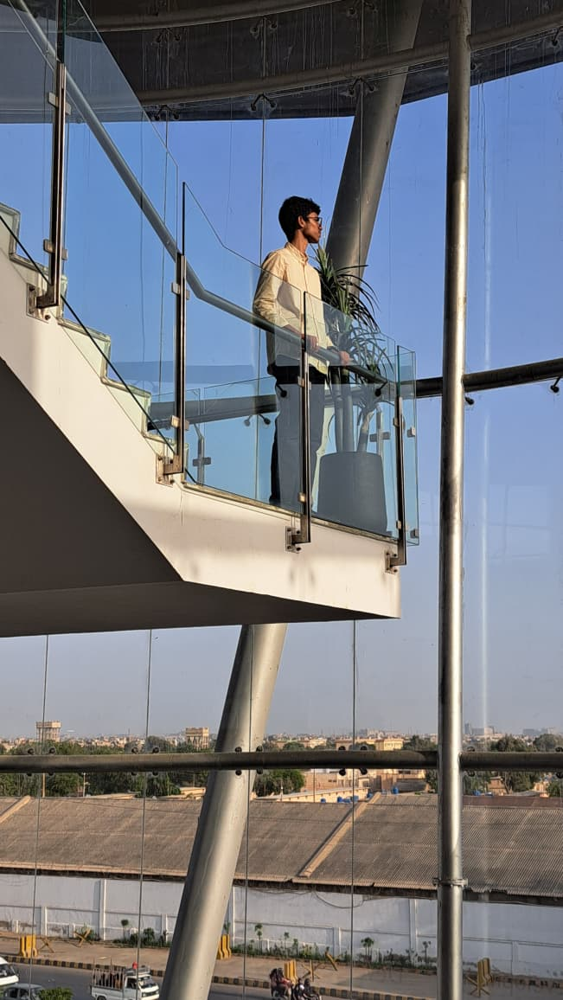

Hi, I'm Syed Muhammad Amad Hussain, a passionate web developer and aspiring Mechanical Engineer. Explore my projects and learn more about me!

THATS ME!!! IK IM SO COOL
Greetings! I am Syed Muhammad Amad Hussain. Most people know me as an O levels Student, but deep down I am more than meets the eye (Transformers Reference btw). I am a passionate web builder who builds small projects like this for fun. I have several certifications In STEM, such as those in Agentic AI by Anthropic along with others such as NASA. I aspire to be a Mechanical Engineer in the distant future. I have also won & participated in several competitions such as a Regional Government STEAM Competition and a National Hackathon. Apart from this I am interested in cool tech like retro digital cameras and LOVE to read on about new Tech being released. *Lets connect on Linkedin!: Syed Muhammad Amad Hussain*
Find code for all projects on my GitHub! profile.
Qeemat Check PK: A website which protects people from getting upcharged from local vendors in Karachi. Users can compare prices they are being charged from official rate lists, and if the prices seem way higher then official rates, they can report prices to the community. Made as both a passion project and for a coding session hosted by GDG Live Pakistan CHECK IT OUT HERE